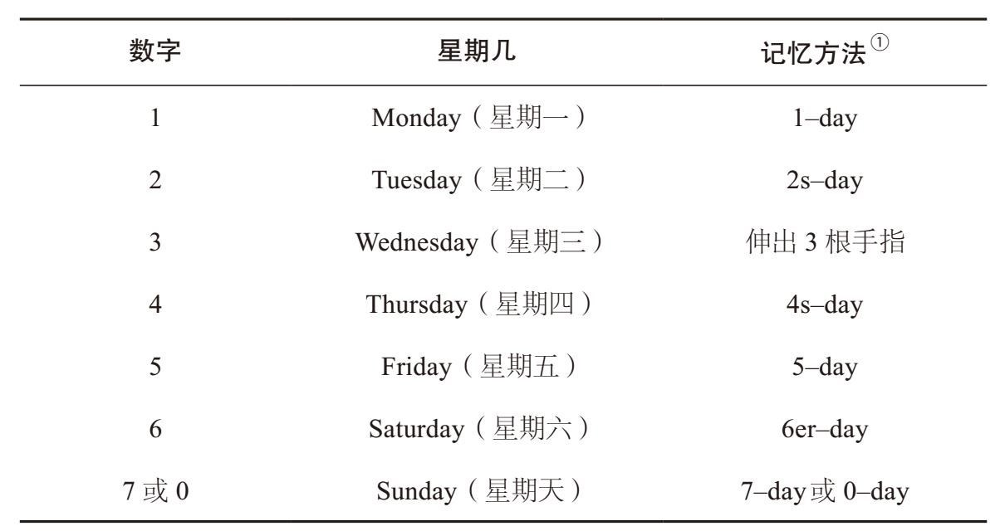
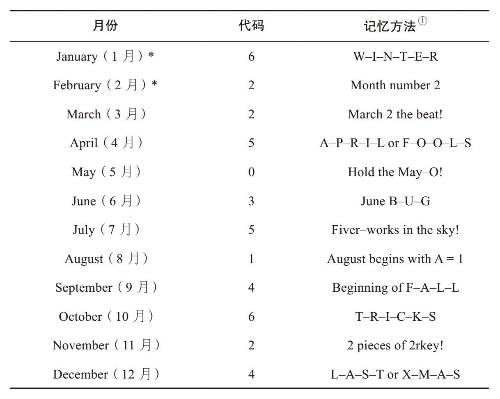
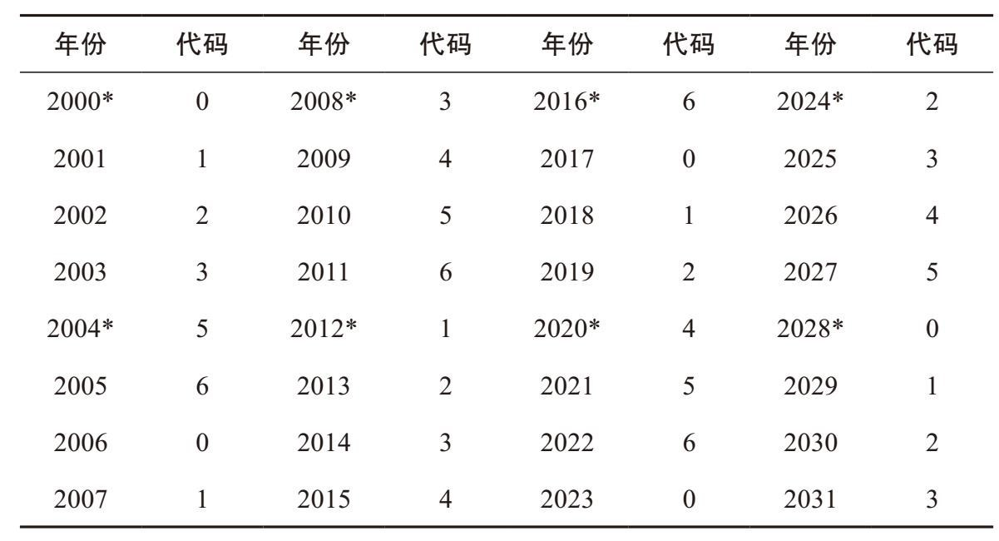
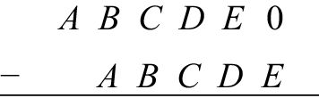
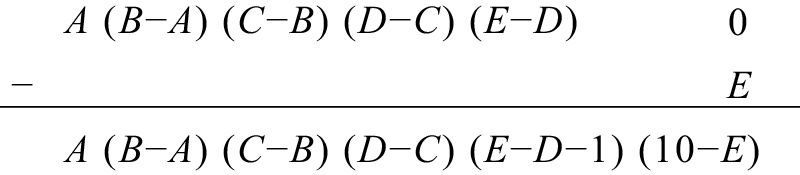

与数学界的朋友聚会时，我最喜欢表演的魔术是根据他们的生日说出他们是星期几来到这个世界上的。例如，如果某人告诉你她的生日是2002年5月2日，那么你可以立刻告诉她那一天是星期四。随意给出今年或者明年的某一天，你都能计算出它是星期几，这项技能在日常生活中常常要用到。在这一章里，我会教给大家一个秘诀，并解释其中的原理。
不过，在学习这个方法之前，我们先要简单了解一下日历的科学原理与历史变迁。由于地球绕太阳一周需要365.25天，因此一年通常有365天，但每4年就会多一个闰日，即2月29日。（这样一来，4年正好是4×365 + 1 = 1 461天。）两千多年前，尤利乌斯·恺撒据此创建了“儒略历”。比如，2000年是闰年，之后每4年一个闰年，于是，2004、2008、2012、2016…2096年都是闰年。但是，2100年却不是闰年，为什么呢？
原来，一年实际上有365.243天（比365.25天大约少11分钟），因此闰年的出现频率略高于实际情况。地球绕太阳400圈需要146 097天，但是儒略历为它安排了400×365.25 = 146 100天，也就是说，多了3天。1582年，为了规避这个问题（也为了方便地确定复活节的具体日期），罗马教皇格里高利十三世创建了“格里高利历”。当年，一些信奉天主教的国家从日历里删除了10天。例如，西班牙规定，在儒略历1582年10月4日星期四这一天结束之后，就进入格里高利历1582年10月15日星期五。格里高利历规定，可以被100整除的年份不再是闰年，除非它们还可以被400整除。通过这个办法，格里高利历从儒略历中减去了3天。于是，1600年仍然是格里高利历的闰年，但是1700年、1800年和1900年却不再是闰年了。同理，2000年和2400年是闰年，而2100年、2200年和2300年则不是闰年。在这种体系下，每400年里的闰年数量是100 – 3 = 97，总天数是 (400×365) + 97 = 146 097，正好是我们想要的结果。
格里高利历并没有马上被所有国家接受，非天主教国家更是不愿意采用这个新历法。例如，英国及其殖民地国家直到1752年才完成了历法转换，从当年的9月2日星期三直接进入9月14日星期四。（注意，这次转换略去了11天，因为1700年在儒略历里是闰年，但在格里高利历里却不是闰年。）直到20世纪20年代，所有国家才全部弃用儒略历，改用格里高利历。一直以来，历史学者因为这个问题吃了不少苦头。我觉得历史上最有意思的一件事，就是威廉·莎士比亚与米格尔·德·塞万提斯的去世时间相差10天，但他们却都是在1616年4月23日离开人世的。原因在于，那时西班牙已经开始采用格里高利历，而英国仍在沿用儒略历。当塞万提斯于1616年4月23日去世时，莎士比亚尚未离开人世（尽管他的离世时间只比塞万提斯晚了10天），而且他所在的英国那一天的日期是1616年4月13日。
计算格里高利历任意一天是星期几的公式如下：
星期几≡月份代码 + 日期 + 年份代码(mod 7)
我们简单介绍一下该公式各项的含义。因为一个星期有7天，因此公式使用的模为7。例如，如果某个日期距离今天还有72天，由于72 ≡ 2 (mod 7)，因此计算该日期是星期几时应该在今天的基础上再加上两天。由于28是7的倍数，如果今天是星期三，那么28天之后的那一天同样是星期三。
我们先介绍星期一至星期天的代码，因为这些代码比较容易记忆。

在“数字—星期几”组合旁边，我给出了辅助记忆的方法[2]。这些方法大多简单明了，无须解释。在记忆“星期三”时，注意观察你伸出来的三根手指，是不是很像字母“W”呢？在记忆“Thursday”时，把它读成“Thor’s Day”，听上去跟“Four’s Day”（4s–day）十分相似。
一周7天的名称是怎么来的呢？我们知道，这7天是分别按照太阳、月亮以及距离我们最近的五大天体来命名的，这个传统要追溯至古巴比伦。从太阳（Sun）、月亮（Moon）和土星（Saturn），我们可以很容易地想到星期天（Sunday）、星期一（Monday）和星期六（Saturday）。其他几天与星体的联系在法语或西班牙语中表现得比较明显，例如，火星（Mars）变成了Mardi或Martes，水星（Mercury）变成了Mercredi或Miércoles，木星（Jupiter）变成了Jeudi或Jueves，金星（Venus）变成了Vendredi或Viernes。注意，在罗马神话中，Mars、Mercury、Jupiter和Venus还是神的名字。英语有一部分源于德语，而很早以前德国人就把某些天的名称改成了北欧神话中神的名字。于是，Mars变成了Tiw，Mercury变成了Woden，Jupiter变成了Thor，Venus变成了Freya，而Tuesday、Wednesday、Thursday和Friday则变成了星期二、星期三、星期四和星期五的名称。
下表给出了月份代码以及辅助记忆的方法。

我暂时不解释这些数字是怎么来的，因为我希望大家先学会如何计算。现在，大家只需要知道2000年的年份代码是0。下面，让我们来计算2000年3月19日是星期几。由于3月的月份代码是2，2000年的年份代码是0，根据公式，2000年3月19日满足：
星期几 = 2 + 19 + 0 = 21 ≡ 0 (mod 7)
因此，2000年3月19日是星期天。
下面，我简要解释一下月份代码的由来。请注意，在非闰年中，2月与3月的代码是相同的。这是有道理的，因为2月有28天，也就是说3月1日比2月1日晚28天，因此这两天在星期几这个方面是一样的。2000年3月1日是星期三，如果我们希望2000年的年份代码是0，同时希望星期一的代码是1，那么3月的月份代码只能是2。因此，在非闰年中，2月的月份代码是2。由于3月有31天，比28天多出3天，因此4月的日历要向后移3天，因此它的月份代码是2+ 3 = 5。在4月的28 + 2天与5这个月份代码的共同作用下，5月的月份代码只能是5 + 2 = 7。由于模为7，因此7可以变成0。按照上述方法，就可以得到其他月份的代码。
另一方面，在闰年中（例如2000年），2月有29天，因此3月的日历要在2月的基础上向前移一天，进而得出闰年2月的代码是2 – 1 = 1。1月有31天，那么1月的代码肯定比2月的代码小3。所以在非闰年中，1月的月份代码是2 – 3 = – 1 ≡ 6 (mod 7)；在闰年中，1月的代码是1 – 3 = –2 ≡ 5 (mod 7)。
每过一年，你的生日会变成星期几呢？正常情况下，两个生日之间有365天，你的生日在一周中的位置会向后移1天，这是因为365 = 52×7 + 1，即365 ≡ 1 (mod 7)。但是，如果两个生日之间出现了2月29日（假设你的生日不是2月29日），那么你下一年的生日就会向后移2天。就公式而言，我们只需为逐年的年份代码加1就可以了，但是遇到闰年时，则需要加上2。下表给出了2000—2031年的年份代码。不要着急，这份表是不需要记忆的！

注意观察，年份代码是以0、1、2、3开始的，但跳过了4，直接到5。随后，2005年的代码是6，2006年的代码本应该是7，但由于模为7，所以我们把它简化成0。接着，2007年的代码是1，2008年（闰年）的代码是3，以此类推。利用上表，我们可以判断2025年（下一个完全平方数年份）的“圆周率日”（3月14日）是星期几。
星期几 = 2 + 14 + 3 = 19 ≡ 5 (mod 7) = 星期五
2008年1月1日呢？请注意，2008年是闰年，因此1月的月份代码不是6，而是5。于是：
星期几 = 5 + 1 + 3 = 9 ≡ 2 (mod 7) = 星期二
请注意，表中横排的年份逐列增加8年，而对应的年份代码逐列增加3 (mod 7)。例如，第一行为0、3、6、2［其中2等于9 (mod 7)］。这是因为，每过8年就有2个闰年，因此日历就会后移8 + 2 = 10 ≡ 3 (mod 7)。
我还要告诉大家一条好消息。1901—2099年，每隔28年日历就会重复一次。为什么呢？因为28年里有7个闰年，因此日历会后移28 + 7 = 35天。35是7的倍数，所以这个变化对星期几没有任何影响。（但是，如果28年中含有1900年或者2100年，上面这个说法就不成立了，因为这两年都不是闰年。）因此，通过加减28的倍数，就可以把1901—2099年中的任何年份转变成2000—2027年中的某一年。例如，1983年与1983 + 28 = 2011年的年份代码相同，2061年与2061 – 56 = 2005年的年份代码相同。
因此，在现实生活中遇到相关问题时，我们都可以把年份转换成上表中列出的年份，再利用表中给出的年份代码轻松地完成计算工作。例如，2017年的年份代码为什么是0呢？这是因为2000年的代码是0，从2000年开始至2017年，日历后移了17次，再加上这期间有2004、2008、2012和2016这4个闰年，需要再后移4天，因此2017年的年份代码是17 + 4 = 21 ≡ 0 (mod 7)。那么，2020年呢？这一次共有5个闰年（多了一个2020年），日历后移20 + 5 = 25次。由于25 ≡ 4 (mod 7)，因此2020年的年份代码是4。一般而言，2000—2027年中任何年份的代码都可以通过以下步骤确定：
第一步：取年份的后两位数。例如，2022年的后两位数是22。
第二步：用4除这个两位数，忽略余数。（例如，22÷4 = 5，余数为2。）
第三步：将第一步和第二步得出的两个数字相加。（22 + 5 = 27。）
第四步：找出小于第三步得数的7的倍数（包括0、7、14、21和28），从第三步得数中减去最大的那个倍数。（也就是说，对第三步的得数进行模为7的化简运算。）由于27 – 21 = 6，因此2022年的年份代码是6。
注意，第一至第四步适用于2000—2099年中的任何年份。但是，如果我们先从年份中减去28的倍数，使之转化成2000—2027年中的年份，就会降低心算的复杂程度。例如，可以先把2040年转换成2012年，然后进行第一至第四步操作，即可算出年份代码为12 + 3 – 14 = 1。当然，我们也可以直接用2040年来计算，同样会得到40 + 10 – 49 = 1。
这些步骤还适用于21世纪以外的年份。在这种情况下，月份代码不变，唯一需要稍加调整的是年份代码。1900年的代码是1，1900—1999年中的各年份代码比2000—2099年中相应的年份代码正好大1。例如，2040年的代码是1，1940年的代码是2；2022年的代码是6，1922年的代码是7（也可以说是0）；1800年的代码是3，1700年的代码是5，1600年的代码是0。（实际上，每过400年日历就会循环一次。因为每400年中正好有100 – 3 = 97个闰年，所以400年后的日历会后移400 + 97 = 497天。由于497是7的倍数，所以星期几是不会改变的。）
1776年7月4日是星期几？要找到2076年的年份代码，我们先减去56计算2020年的代码：20 + 5 – 21 = 4。因此，1776年的年份代码是4 + 5 = 9 ≡ 2(mod 7)。所以，在格里高利历中，1776年7月4日是：
星期几 = 5 + 4 + 2 = 11 ≡ 4 (mod 7) = 星期四
或许，《独立宣言》的签署人需要加快速度，才能尽快完成立法程序，从而过个愉快的周末吧。
在结束本章之前，我向大家介绍数字9的另一个神奇属性。任取一个各个数位上的数字都不相同而且由小到大排列的数字，例如12 345、2 358、135 789等。将这个数字乘以9，然后将乘积的各个数位上的数字相加。尽管我们知道这个和是9的倍数，但令人吃惊的是，它正好是9。例如：
9×12 345 = 111 105，9×2 358 = 21 222，9×369 = 3 321
即使某些数位上的数字相同，只要各个数位上的数字符合由小到大排列且个位数与十位数不同的原则，那么上述规律都成立。例如：
9×12 223 = 110 007，9×33 344 449 = 300 100 041
这是为什么呢？试着计算9与数字ABCDE的乘积，其中A ≤ B ≤ C ≤ D < E。由于乘数9与乘数（10 – 1）的效果一样，因此这道乘法题与下面这道减法题的得数相同。

从左至右完成减法运算时，由于B ≥ A，C ≥ B，D ≥ C，E > D，因此这道减法题又可以转变为

因此，得数的各个数位上的数字之和是：
A + (B – A) + (C – B) + (D – C) + (E – D –1) + (10 – E) = 9
证明完毕。
[1] 模是mod的音译。——编者注
[2] 该辅助记忆方法是基于星期一到星期天的英文单词读音给出的。——编者注